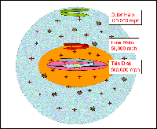

February 9, 2007
|
+ enlarge  |
|
This illustration shows the discovery that the outer Milky Way is a really a mixture of two distinct components rotating in opposite directions. The inner component of the Galaxy's halo spins clockwise with the Galaxy's rotation at about 50,000 miles per hour. The outer component rotates counterclockwise to the Galaxy at 100,000 miles per hour.
The international discovery team of the Sloan Digital Sky Survey (SDSS-II) used data to demonstrate that the inner part of the halo is more flattened, and dominates the population of stars up to 50,000 light years from the Milky Way's center. The outer halo is more spherical, and dominates the population beyond 65,000 light years from the Galactic center. It may extend out to more than 300,000 light years. SDSS-II scientists believe that the two components were made of smaller or dwarf galaxies torn apart and accreted into the Milky Way. They also found differences in the chemical compositions of the inner and outer halos. (Credit - SDSS-II, Masashi Chiba, Tohoku University, Japan) |
Using a map of more than 4,000 luminous quasars in the distant universe, scientists from the Sloan Digital Sky Survey (SDSS-II) have shown that these brilliant beacons are strongly clumped, with huge quasar superclusters separated by vast stretches of empty space. The strong clustering shows that the quasars lie within massive concentrations of dark matter.
"Previous maps showed that more nearby quasars cluster like 'normal' galaxies," explained Princeton University graduate student Yue Shen, who led the study. "But the clustering in our map is ten times stronger, the difference between a high contrast photograph and a washed-out Xerox."
Quasars are glowing, ultraluminous concentrations of swirling gas falling into supermassive black holes at the centers of otherwise ordinary galaxies. Their great luminosities allow them to be seen at enormous distances, and since light travels at a finite speed, quasar maps provide a glimpse of structure when the universe was a small fraction of its current age.
"Quasars lie in galaxies, which lie in extended halos of invisible dark matter," said Princeton University astronomer Michael Strauss, a member of Shen's team. "In a typical galaxy, the dark matter outweighs the stars by 10 to one."
"We can't observe the dark halos directly," Strauss explained, "but we know from theoretical calculations how they should cluster with one another. By measuring the clustering of the quasars, we can infer the masses of the 'halos' in which they live."
"We've shown that the brightest quasars, powered by the biggest black holes, lie in the most massive halos of the early universe, several trillion times the mass of the sun," added Shen, "This is roughly what theories predict."
The luminous distant quasars—powered by black holes up to a billion times the mass of the sun—are extremely rare, with average separations of 200 million light years or more. Before the SDSS, only a few hundred quasars had been discovered beyond 11 billion light years, the minimum distance of Shen's sample,
"The SDSS made this possible by imaging a large area of sky to great depth, then following up the candidates to show which were true quasars," said team member Gordon Richards of Drexel University. "Until you have a few thousand objects in your map, you can't make this measurement."
Because gravity pulls dark matter into denser structures over time, the clustering of dark matter in the early universe was much weaker than it is today. Richards explained the strong clustering of the brightest quasars as analogous to that of the highest mountain peaks on earth. "Most of them lie in the Himalayas, the Andes, the Rockies or the Alps."
"There's a whole low-altitude landscape of galaxies and dark matter," said Richards, "but when you look for the brightest quasars you pick out just the snowcapped mountain ranges."
The new measurements shed light on the early growth of supermassive black holes, according to theorist Avi Loeb of Harvard University, who is not a member of the SDSS-II team.
"The existence of bright quasars at early cosmic times is one of the unsolved mysteries of cosmology," Loeb said. "How did black holes grow to a billion times the mass of the sun when the universe was only a tenth of its current age? The SDSS measurements will help us answer this question."
The results are described in the paper "Clustering of High Redshift (Z > 2.9) Quasars from the Sloan Digital Sky Survey," which was posted to the astro-ph archive today. It has been accepted for publication in The Astronomical Journal.